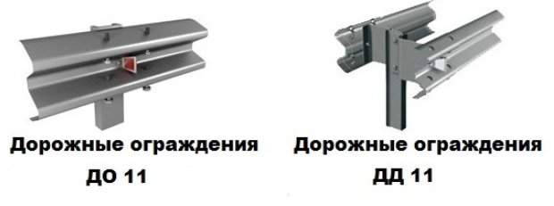
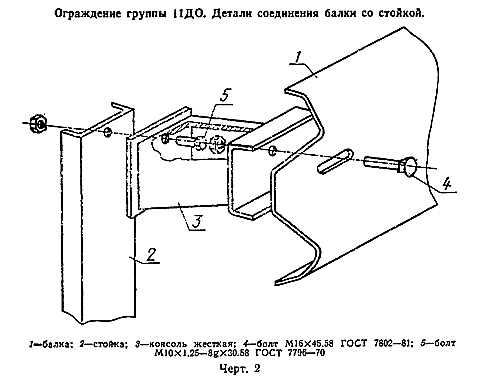
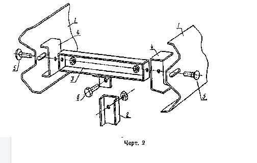
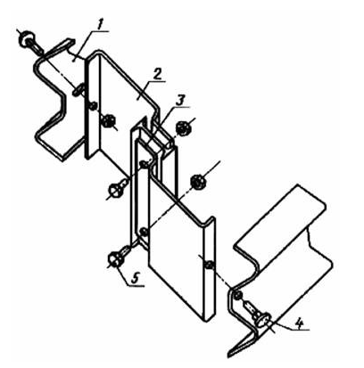
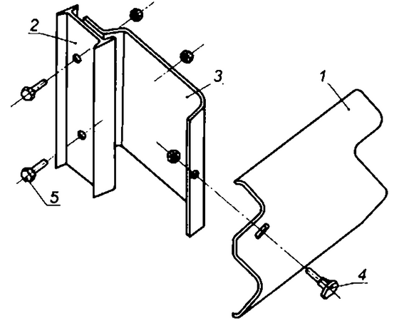
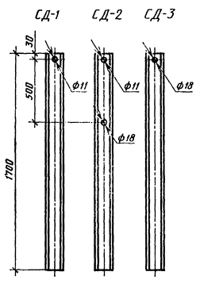
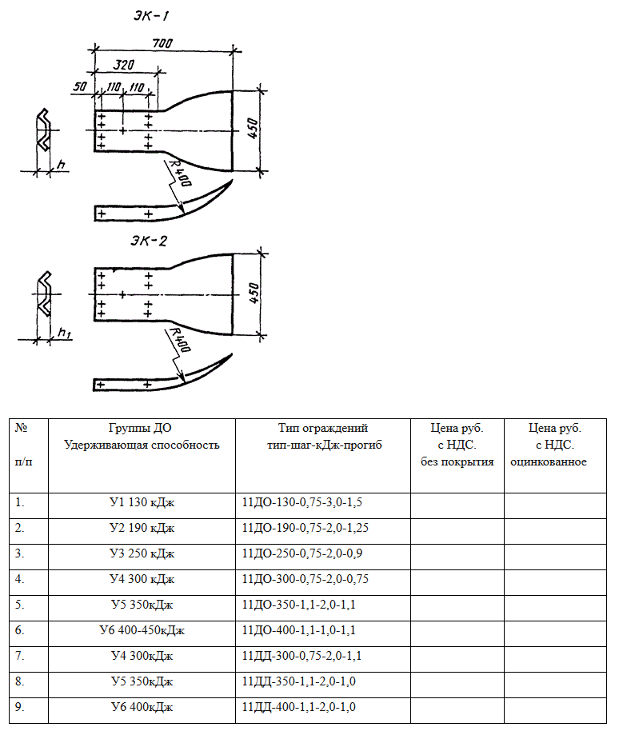

11 ДО односторонние дорожные ограждения барьерного типа устанавливаются вдоль земляного полотна дороги и препятствуют непреднамеренному съезду с него транспорта, ограждают проезжую часть от сооружений и различных предметов, расположенных в полосе отвода дороги.
11 ДД двухсторонние дорожные ограждения барьерного типа применяются на дорогах с четырьмя и более полосами движения и устанавливают по оси разделительной полосы. Они предотвращают столкновение транспортных средств из встречных потоков.

11 ДД - ограждения дорожные двухсторонние
11 ДО - дорожное одностороннее (устанавливается на обочинах дорог, магистралей)
11 МД - перила ограждения мостовые двусторонние
11 МО - мостовое одностороннее (устанавливается на мостах и эстакадах)
11 МО-УБ - ограждения мостовые односторонние, усиленные балкой
11 МО - УТ - ограждения мостовые односторонние, усиленные трубой.





Элемент концевой ЭК
h=83 мм (11ДО-К, ЭК-1)
h1=60 мм (11ДО-Н, ЭК-2)
